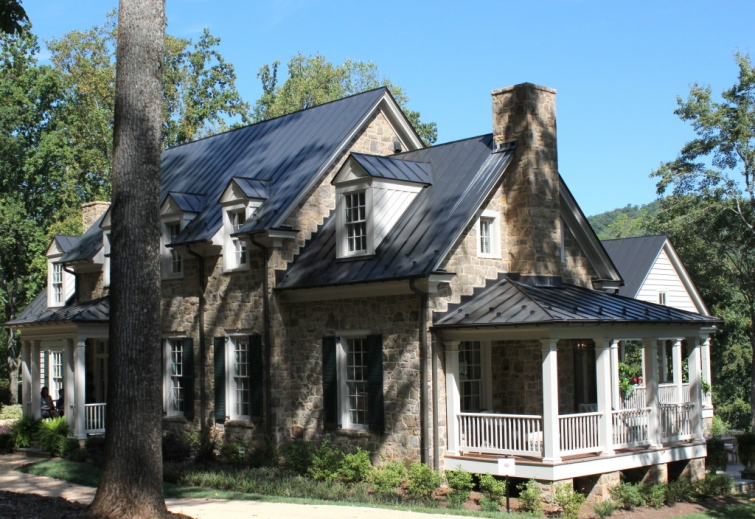
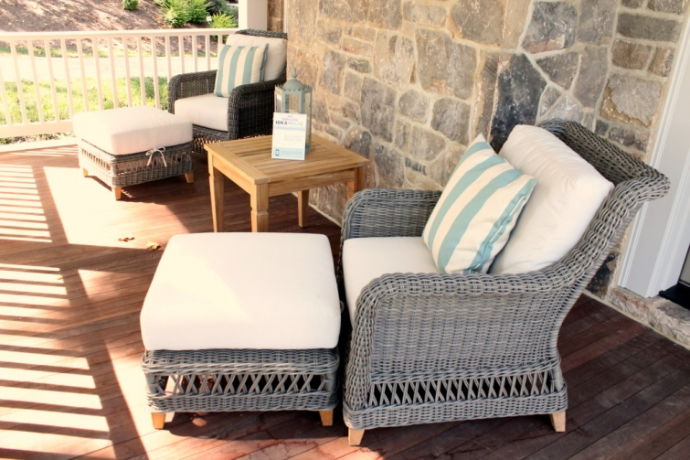
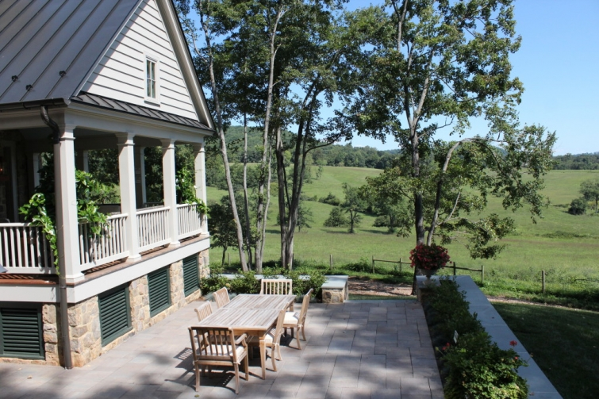

.png)
.PNG)
.PNG)
.PNG)
.PNG)
.PNG)
.JPG)
.JPG)
.PNG)
.PNG)


I am so excited to share this part of the tour with you today! The outside “rooms” were my favorite ones from this Southern Living Idea House, and from the sounds of your comments in the last two posts, I think you will agree. 🙂  So let’s get started!
The photo above shows the front of the house with all its wonderful stone work. Â The porches you see there on the right side of the house are where we are about to go. Â The one at the very front is the porch below – the “master porch” as it is called. Â There is a private door from the master bedroom that leads to this porch. It is a nice space with very comfortable seating, (from Ballard Designs) but it is not very private to me since you are right there beside the driveway. Â Still wondering about that one...
If you look towards the back of the house from the master porch, you will see this gorgeous patio space and that absolutely perfect view of the farm beyond. Wouldn’t that be an amazing space for entertaining??!
Here is another look at your view of rolling hills and farmland from there.
 Of course we loved all the planters around the outdoor areas.
Of course we loved all the planters around the outdoor areas.
There is a smaller dining area on the patio around the corner from the master bedroom.
Do you see that small porch area up there on the other side of that patio table?  That is what I am calling the “kitchen porch” because it is right outside the kitchen dining area.  I would want to have my morning coffee in that spot; wouldn’t you? 🙂
If you look across from the kitchen porch, you will see yet another porch…an even larger one.
That one is called the “screen porch” (not screened porch.)  It has even more seating on it – but no table for dining and no sofa for lounging – which I would definitely want if this was my porch. 🙂
But it does have that fabulous stone fireplace with copper sconces. 🙂
I think the height of the ceiling and the fact that there is a window in the upper wall is interesting (and allows for more light.)
Now let’s go back around the yard to the front of the house again.
We are going to walk to the other side. Â Again I think the architect and builders did such a great job with the mix of exterior materials.
That wall of windows is the wall with the kitchen stove.
This side of the house has the garage.
One thing I noted was the pots outside the garage. Â I am thinking I would like to do that here, but I wonder if having them on asphalt would be just too hot for the plants. Â Would I need to put them on a wooden platform or something?
Southern Living and its Idea House sponsors had tables with brochures set up inside the garage.
My husband took a look at them, and then we headed up the stairs in the garage. (I like the runner they used there.)
At the top of the stairs is this great little studio space!
 Art supplies are set up in the corner by the stairs.
If the sofa is a sleeper sofa, this would make a wonderful place for overnight guests.
There are a number of bookshelves with storage baskets and a large desk area for two people – and another wall of windows to take in the view.
And there is a very nice bathroom with a good size walk-in shower. Â Definitely workable for a guest room.
(Kind of hard to take a photo of a mirror without getting yourself in it.)And now back downstairs to the best space of all – the dogtrot. 🙂
Just park in one of those rockers, and I will get us both a glass of sweet tea. 🙂
(House touring is such hard work.)
Right behind the rockers is the best sink I have ever seen in my life. Â It is a custom soapstone one on a custom metal stand. Â My husband checked it out and told me to forget adding “make one of those sinks” to his honey-do list, but boy would it come in handy for soooo many things…especially flower arranging!
As this tour comes to a close and you look at the last of the images, I want to take a minute to talk about the house. Â I have read many many comments about this Idea House (and other ones) on the blog here and on a number of other sites. Â Many people have not liked what Bunny Williams did with it, and some have even suggested she must have had her assistants do it because it does not reflect her typical style. Â Others have loved loved loved it.
To be honest, I did not particularly care for a lot of the interiors.  They are just not my style, and a good bit of the decor is out of our price range I am sure. (The lots alone there start at $200,000.) The fact that I love candid photography much more than painted art (much to my artist mother’s dismay 🙠) certainly has a bearing on whether or not I like a space, and the fact that there is no art in the outdoor spaces makes them appeal to me even more.  Art is such a personal thing, it would be impossible to find pieces that appeal to everyone.
I got quite a giggle out of those of you who suggested that Southern Living should let me do their next Idea House. 🙂  Know that I am very flattered, but I can assure you that 1.  The people at Southern Living have no idea who I am nor that this blog even exists, and 2. Large numbers of people would not be drawn to visit an Idea House done by me and my no-name name (and sponsors would not be willing to send their materials to the house for my use.)
But it would be fun to imagine the spaces in that beautiful house done with red buffalo checked drapes in the kitchen and dining area, some colorful wicker pieces here and there, and simply framed black and white personal family photos about. Â If James Farmer decorated it, he would use khaki buffalo check drapes and hang plates and antlers on the wall. Â It Toby West did it, he too would hang a lot of plates on the wall and make canopies for some of the beds.
That is the beauty of an Idea House..it allows you to get ideas from it (like a pajama room, like a humongous soapstone sink on a dogtrot, and like a built-in wall of storage in its kitchen.) If we were building another home, I would tour an Idea House for ideas for flooring, doors, cabinets and layout.  But even beyond that, an Idea House can still allow your imagination to wander with ideas of how you would decorate it. A home should be personal and reflect your personal tastes.  Granted, we would all love to see ideas that reflect our personal style, and I think many of us here do have a number of tastes in common. (Otherwise we wouldn’t all be here together. 🙂 ) The problem is that most magazines and television shows and websites do not seem to reflect what we like.  But that is okay with me. Our home is a welcoming place for our family and friends, and isn’t that what we all want in the end and what’s most important?
Glory! Â I did not mean to turn this into a sermon. Â I just wanted to weigh in with all the diverse comments here and on other blogs. Â Hope I did not put you to sleep!
Let me finish by telling you there is one – and only one – more blog post from the road trip. (I can hear your hallelujah!) The photo above is from the last beautiful stop that I hope you will come back to see.  And then…next week begins the Fall Tour of the house here.  Yippee!  I have been dying to show you all the October-ness running rampant here. 🙂
I’d love to hear your comments on the outdoor spaces and the studio for the Idea House…or maybe Idea Houses in general since I opened up that can of worms.
Until next time…


.PNG)
I drug my husband to the idea house after reading this blog. I have to say…Photographs don’t do it justice, although yours are 110percent better than mine the house was somehow warmer and more welcoming in person. I wanted to lay my face on the Kitchen Island and tell it how beautiful it was. The kitchen was much lovelier than any of the photographs even though it was so white… They told us that the house had been sold for 2.2 million and I am sure the first thing the new owners do is screen in that porch.
——————————————————————–
The new owners SHOULD screen in that porch. LOL I am so glad you got to see it in person, Betty and that you found it to be a warm and inviting place.
Kelly
I have been away for 10 days and am just catching up. I just read all of the comments and realized there were lots of readers who felt the same way I did about the decorating style inside the house. When I read the comments on the first few posts I thought of “The Emperors New Clothes”….I was like…Really? They love this style? I do like the outside better than the inside. The kitchen porch is my favorite and I love that sink as well. Do you like the olive buckets beside the sink? I like your style of using black and white family photos in black frames as artwork. I would like to see some of your mother’s artwork though. I bet you get your creativity from her.
———————————————————————-
You have done a lot of catching up Kathy! Thank you for taking the time to read all the posts you missed and comment on so many of them! (You should get an award for that. 🙂 ) Yes, the porches are the favorite of so many of us. Love that sink! I like the olive buckets beside the sink…not sure what I would do with a bucket that doesn’t hold much though. LOL Guess I could put something inside it if I wanted to use them to hold flowers.
I probably do get my creativity from my mother and also my love of houses. She started it years ago when we would go “riding” to just look at houses in Mobile, Alabama. 🙂
Kelly
Oh I do so love American porches! And these are stunning. I’m going to have to give some serious thought to ‘acquiring’ a porch when we move house (at some point in the future). Gorgeous!
———————————————————————-
The porches make the house as far as I am concerned. (And I would not buy a house without a screened in porch!)
Kelly
Hi Kelly! Like you, my favourite part of the house is definitely the outside “rooms”
I just LOVE all the porches! The styles of so many American houses with their porches are just beautiful to me. I’d love to live in a house with a porch or even a small balcony!
Rosemary
——————————————————————–
The porches were so nice on that house…and there were SO many outdoor spaces! With mild temps, they could be quite enjoyable. I too would like a balcony, but it would have to be screened so that you are not carried away by the insects!
Kelly
I always enjoy home tours. Thanks so much for this one. I agree that the outside architecture and porches are the stars of the tour. They have coziness and interesting elements that are somewhat missing inside. The pots of flowers. stone, landscaping, and sink make it real. The inside has many lovely features but it is so predictable, almost like every thing was chosen from a catalog. I miss local elements like artwork, photographs, quilts, or antiques. I think that is why we are drawn to your home – your personality is a definite feature.
It’s always easier to critique from the sidelines but local “color” is definitely missing. I am getting ready to head to the northeast for a week so I am busy reviewing your posts for places we might want to visit. The last time we went to the northeast we stayed at an inn close to Kennebunkport that you had mentioned. Thanks, Donna
——————————————————————-
Thank you for reading all the tour posts! The house did have art, but photos (even obviously fake ones) would have given it a sense of “real life.”
Oh how lucky you are to be touring the northeast now! I can’t even begin to imagine how beautiful all the leaves are. You have picked a great time! Enjoy your trip!!
Kelly
Hi Kelly, my family and I are vacationing on Bald Head island. The exciting thing this weekend is the open house for their Southern Living Idea House.
I just left there, beautiful! Trust me not a drop of builder beige. I was fortunate to meet the builder and designer. The designer was so much fun to talk to and hear stories about designing a house on an island. I told them both about your blog and your visit to the Virginia house. The designer was especially interested in visiting your blog.
Thanks, Cindy
———————————————————————-
You are killing me! First..you are vacationing on Bald Head Island – a place I have always wanted to go! Secondly, you got to see the Idea House there! And third you met and talked with the builder and the designer!! How much better does it get???!! From the few photos I have seen of it, there seems to be color (a lot of blue) and pattern in the rooms, and I love that coastal exterior. Well done! Thank you for sharing the blog love, but after this weekend’s Roast, Toast, at the Coast, and the excitement of opening the home for touring, I bet they won’t remember to look at a blog. But if they do, thank you thank you for telling them about it. 🙂
Kelly
Love all the porches – every single one. I think they all need pots of flowers but I understand the upkeep and watering to keep them alive. This home is so pretty on the outside just adore the stone. Ok I am stepping on my soapbox just for a little minute. IMO – I miss the “Southern Living” that had interiors that looked “Southern” it is a regional magazine and I think that’s what we love about it. There is a “look and a feel” to a Kelly house, a James Farmer house and a Toby West style house and they honor that look and feel. They all have the owners personality and touch they just feel “Southern”. Once again, IMO that’s where this one missed the mark. Done off the box.
Love that shot of hydrangeas you are a tease! So look forward to the fall tour.
Never disappointed in your home tours always fun and cleverly done!
——————————————————————–
There were a few pots of plants on the porches, but I think more were needed on the kitchen porch and the patios. They probably had them initially, but like you said, the upkeep would be a lot of work.
Amen to your soapbox! I have been waiting for someone to get on one. (I tend to get on mine quite frequently. 🙂 ) Southern Living seems to be going towards a different audience than its traditional one from years ago. (But even Tradition Home has done the same thing.) The house did not look Southern. The exterior looked straight out of Pennsylvania to me – although the stonework could have easily been in Virginia and there is nothing at all wrong with Pennsylvania architecture. I would have thought this was an Idea House for Traditional Home magazine – not Southern Living. There were also no painted plank walls anywhere in that house, and I think that would have added a vibe that we all would have appreciated. So I totally agree with your soapbox, and I am off mine now. 🙂
The hydrangeas came from a gorgeous place that I hope to show you this evening. See you soon for that!
Kelly
Like so many readers, I also prefer the exterior . I would have love to have seen brick inside the house and a cozier feeling with some red accents! You would do a fine job decorating. It would be interesting what James Farmer would do with the house as you say. The views are amazing. The studio seems to be lacking a little character for my liking.
Look forward to your Fall Tours
——————————————————————–
I think it needed more red as well. I was surprised by the studio. It was almost as if they spent all their time on the side with the desk and bookshelves, and then ran out of time on the other side…even to the point of perhaps not getting in a rug for the room. Maybe I am wrong. I do know it is rush rush rush to finish an install of that big a scope of work with a looming deadline.
Fall tours coming next week. 🙂
Kelly
Kelly,
I have scrolled through this four times. This has been an enjoyable series. Apologies for sounding redundant, but I agree with many that the exterior of this home would be its selling point(not that I could afford it.) I did like the built-in shelves in the studio. I thought the basket arrangement was eye appealing. I do love the porches. The dog trot is my favorite. Maybe it’s the cozy rockers and the potting sink. I like the style of the exterior doors on the house. I even liked the garage doors. Even though I don’t really care for most of the decor of this home, I loved the size of the kitchen and the windows (love a light kitchen.) The views are beautiful, however they might make me lazy..don’t think I could leave the porch. You could have done a much better job decorating the porches and the entire house for that matter. Your screen(ed) porch is decorated much better than these. So, bring on your Octoberness! I am so ready to see it. We’ll be waiting.
Sherry
———————————————————————-
Thank you for reading all the parts of the tour Sherry. Don’t apologize for sounding redundant! I think everyone here is probably drawn to a similar aesthetic so it would make sense that many of us would have similar likes and dislikes of a house. I liked those doors too…and the paint color on them.
Octoberness is coming this week…if I can get that last road trip post out this evening. Bring your shades for my fall tour…it is bright! 🙂
Kelly
The exterior elevation of this house is truly spectacular. The inside not so much. I think the floorpan is just about perfect but the interiors were just lacking. I think I was expecting something truly different and they were just so ordinarily traditional. And while I LIKE traditional this just did not do it for me. I loved all your pics though. Thanks for the tour. You did a way better job then Southern Living magazine.
———————————————————————-
Thank you Lisa. I don’t think the magazine has room to include all the many photos that I could in 3 parts here on the blog. I really didn’t know what to expect. I had seen photos of the exterior but had not looked at any of the interior before we went. The wood paneled room itself (not the decor) seemed to fit with a stone house, and the flooring throughout was perfect for it. Maybe the interior style just didn’t go with that fabulous exterior style (but there were still many good ideas to see in the house itself.)
Kelly
What beautiful views from the outdoor areas of this house! And I love the six over six windows. Very pretty.
———————————————————————–
I would want to look out at those views all day. 🙂 And I loved that those beautiful windows had the exterior grilles to give them a more authentic look further adding to the appearance of a home with age.
Kelly
Thanks for the in depth tour. The exterior is my favorite – and I love that soapstone potting sink. As for the interior decoration, some things I liked, and some not as much. I didn’t mind all the art – and, yes, some of it was unexpected. But I don’t care so much for ‘canned’ art – the perfectly matched prints that can be ordered from any art supplier. This looks much more fresh, original, and personal – as if collected over time by what attracted the buyer, not to match a decor. I was rather surprised that the color scheme throughout did not seem very cohesive. There was the blue and white, the green and salmon, the peach, taupe, and blue-gray – just on the first floor. Yes, some colors repeated, so I guess there was some continuity. It’s a gorgeous house, though, and plenty of ideas to take away.
——————————————————————-
That sink was most definitely a hit! I like your take on the art…like it was collected over time. And you make a very good point about the color choices. There did not seem to be any continuity to them at all. Maybe that was intentional? I don’t know. The exterior still seems to be the most well done part of the house.
Kelly
I was correct thinking the outdoor spaces would be my favorite!! I love each one. I can imagine slipping out to the kitchen porch several times a day. I love the dog trot area also. I bet it would be cool in the summer with a breeze. Perfect work space. And yes, that sink!! The views are just gorgeous! Perfect porch-sitting views! 😉 My daughter and son-in-law are working with an architect so they can take advantage of their mountain views! Haha, so they will have several porches also. 🙂 Yes, we all seem to have strong opinions (me too), but you addressed it well. All of us have different tastes and our homes should reflect that!! Like you, I love to visualize how I would decorate the house. Haha, especially on their budget!! 😉
————————————————————————-
Their budget would make a huge difference in what we do, wouldn’t it? Every time someone mentions winning a chunk of money I always say the first thing I would do is add a stacked stone fireplace to our back porch. Wish I knew how to build one! 🙂
I am so glad you liked all the porches in the Idea House Gina. You can’t beat those views of the farmland with the mountains in the background. Ultimate peaceful view!
Kelly
You’re so right- the outdoor spaces were definitely the hit of the house. The inside gives the impression that there was a tight timeframe and/or tight budget for decorating it. If that’s the case, then they did manage it nicely. It is a pretty house. Makes me want to do an “If It Were Kelly’s” post, because I agree with the others that you could make it adorable.
———————————————————————
I do wonder if they are limited on the items from which they can choose. Time and budget constraints could certainly have an effect on the end result like you said. An “If it were Kelly’s” post gave me a giggle. You are so good at doing those kind of posts with great vision Vicki!
Enjoy the rest of your weekend. 🙂
Kelly
Kelly,
While I love outdoor decks and patios I have to wonder if I’d want that many, especially since I’d want them furnished and that could really add up dollar wise. I love the kitchen patio the best as well. I would screen in the “screen patio” first thing. I imagine, like our kids place in Austin, that summers can be brutal where flying insects are concerned, especially mosquitos, so I’d want a space where I could enjoy the outdoors without slapping a bug off me.
Not so fast on the whole, no-name stuff. I finally got to see your Christmas house in the BHG magazine and its spectacular. I think your rise to fame is sure to follow. I love your style so of course, I’d love to see your design ideas come to life in a home such as this. It was so fun to see you and hubby (and daughter) in the feature. Great job!
Happy Friday, enjoy the weekend.
xo,
Karen
———————————————————————–
You are quite right about there being so many to furnish (and keep clean!) Screening in that large porch would make it much more usable. I think they need a sofa, a swing, and a dining table on that big one to really make it usable.
Thank you so much for your sweet words on the magazine article. I thought the whole crew did a nice job bringing the project to life. Photographing the 3 of us together was probably the hardest thing they did all day! LOL
Hope you are having a great weekend Karen!
Kelly
Forgot to tell you…I have had pots of geraniums and grasses in between my south facing garage doors for years…we have concrete and very reflective siding. No problems growing those…but do water daily! 😉
——————————————————————-
Good to know! Thanks for your input on the planters!
Kelly
I really enjoyed all the tours you had of this idea house. Really liked the outside, with the exception of the garage roof lines. Dog trot…cute, but don’t get the name. I loved that sink though….so useful. A screen or screened porch has screens…no? Didn’t look like there were screens there…but loved the covered porch non the less. As far as decorating…not too impressed. But, I love idea houses, parade of homes, etc. Always so many ideas, interpretations, of what looks good to someone. Truth be told…I love your style of decorating…I love my style of decorating…as different as they are, they are similar because we both love our homes! Enjoy your day! 😉
————————————————————————
Donnamae, thank you for reading all the posts on the tour. I’m so glad you like touring idea houses! The name dogtrot is an architectural term for a style of house. It typically had two sections that were connected by an open breezeway between them all under one roof. The open area was cooler in the summer, and dogs could trot through this open space. My great grandparents’ home in Mississippi was a dogtrot house with the living areas on the right, the bedroom areas on the left, with a connecting dogtrot between the two sections. The architect of the Idea House, gave a nod to this term with his open space between the main house and garage area.
In the Idea House, I do not think that back porch was screened, but I certainly would have wanted it to be so that it could be used for longer periods of time without all the insects.
Kelly
Thank you so much for this series! You’ve shown us so many areas of the home that weren’t included in the magazine. I love this plan and the exterior! I agree with you about the decor. Southern Living seems to be going in a different direction these days.
———————————————————————
You are quite welcome Kimberlee. I loved the exterior a lot! The mix of stone with all the other things really made for a beautiful house. Yes, I would agree with you that Southern Living is going in a different direction. I think they are trying to market to a younger more contemporary readership in their home area. The cooking section is still one of my favorites though. 🙂
Kelly
What a lovely outside space. I especially like the porch with the beautiful stone fireplace. That soapstone sink is amazing. I think you need one!! Tell you husband I said so! Thank you for this tour….I loved it.
———————————————————————
I will tell my husband! I am sure he will add that to his list after the many other things that are already on it. He is currently working on the ceiling on the front porch…home ownership is not for the weary!
Glad you enjoyed the tour.
Kelly
You are so right, Kelly – the outside with the house details and all those glorious porches, stonework, nooks and crannies and views! are the best part of these three parts. Thanks for sharing them with us! And yes, could use more coziness, but then I’m not sure that’s what designers go for in an idea house!
I know I’m here because I love your taste in decorating and your curiosity in other spaces to see and share the ideas of those houses and places with us. I also love your blog because I can no longer travel far due to my mom with dementia living with me, so your blog allows me to “travel” and see what’s out there 🙂 What a blessing for me!
Now – really looking forward to Autumn and your posts. I will share one silly story with everyone that came to mind as I read this post and your comments. Years ago, I saw an issue of Architectural Digest, and the shingled “cozy” home front door and steps photo on the cover reminded me of Martha’s Vineyard. It looked small and cozy and I bought the magazine to add to my dream home folder. LOL The photo was from a MV home, BUT it turned out to be the back kitchen entrance door! So I realized I’m not that fancy – but I still have that magazine for inspiration 🙂
Love your blog! Happy Friday and weekend to come – mari
———————————————————————–
The views from that home were just wonderful, and I am sure the architect, when designing the windows, took that into account. And the exterior looks like an old home that has stood the test of time. So we should all love that! I am so glad you enjoy “traveling” with us in the posts to see homes and other places in our country.
How funny that the “cozy home” in the magazine ended up being the kitchen entrance! Even big homes need a dose of cozy in them in places. 🙂
Hope you are having a good weekend! It is dreary cloudy here today. At least we have not had to deal with the awful flooding that has hit South Carolina. Prayers for them.
Kelly
Kelly, I have so enjoyed all the vacation posts. The Idea house was beautiful, but like you said would love to put my own ideas in it. Can’t wait for your tour. Happy weekend.
———————————————————————
Thank you Linda. I am happy you have enjoyed all the posts from our very long road trip. 🙂
Hope you are having a great weekend!
Kelly
Kelly thank you for sharing this home. I love the exterior, it is just dreamy!! That covered porch with the peaked ceiling, fireplace and copper sconces!! I wanted to tell you that I have planters on our asphalt driveway, we live in Massachusetts and even in July & August my plantings do fine there, I think because they do get a bit of shade throughout the day. 🙂
————————————————————————-
I’m so glad you enjoyed touring the house Lisa. And thank you for the details on your potted plants. Massachusetts is not quite Georgia, but still, knowing how yours do on asphalt is great info. Our location faces east, so it would get morning sun, but it is shaded from the afternoon sun by some tall bushes. We’ll see!
Kelly
The architecture of the house is beautiful! I love the potting table and that area…that being said…talk about boring!!!! Absolutely no color or personality. What were they thinking? Most of the areas in the studio looked like what we call, “builder beige.” I also was not crazy about what Bunny Williams did…I like her old “stuff” much better. It would have been fun to see what James Farmer what have done…love that boy!
———————————————————————–
The exterior is stunning. Don’t we all need a sink like that big one? I had hoped the studio would have been decorated with a more fun spirit. Often times this is the room that gets to be a little more youthful when you tour it. I particularly remember those in the Coastal Living Idea Houses that are painted bright fun colors with cute fabrics used for window treatments and pillows. I would like to see what Holly Mathis does with an Idea House. I think she would do a very good job with it. Perhaps the next Idea House will be in Texas and they will call on her. 🙂
Kelly
I DITTO EVERYTHING that Susan Oct. 9th has said. I too like all the porches with all the details. I especially like the stone on the outside of the house. Reminds me of Bucks County, PA. I too would love to tour this home. Thank You Kelly for sharing.
Mary Ann
————————————————————————
I thought that house looked like old ones in Pennsylvania too! All that stonework was wonderful. Glad you enjoyed touring it too!
Kelly
Kelly! I loved the outdoor spaces on this home!! The porches were so dreamy! I think these are my favorite spots in this house…oh, you are so correct…wouldn’t it be nice to have morning coffee on that porch?! and also, the sink would be so wonderful! Oh my, could I get lots of use with that baby!!…. but, I am wondering, your pictures are so great…what camera do you use?! Your pictures are so professional looking…I know my camera would never put out pictures like yours!! As always, so much fun and inspiration in all your tours and postings!! Thank You so much for the entertainment!! I would love love to tour this home!!
———————————————————————–
Weren’t those porches great?! Coffee on that kitchen porch would be perfect.
Thank you for the compliments on the photography. My camera is a Canon EOS Rebel T3i, but I am blind as a bat. When the auto-focus messes up, I have to hand my camera to my husband and say, “Stand right here, and focus this for me please.” 🙂 I use a tripod when I am taking photos at home, and inside hotel rooms. Obviously, I did not haul it around at the Idea House. I use the camera on manual setting so that I can play with the light, and I take a zillion photos with different light settings so that I can choose the best from them. (I literally took around 300 photos at the Idea House and 200 at the next stop after it that day.) After I choose the ones I want for the blog posts, I edit them in Picasa to lighten or darken them as needed. I could probably not do a good job photographing people because I am not steady enough to catch action in focus. It’s a good thing I like to photograph still objects!
Hope this helps. 🙂
Kelly